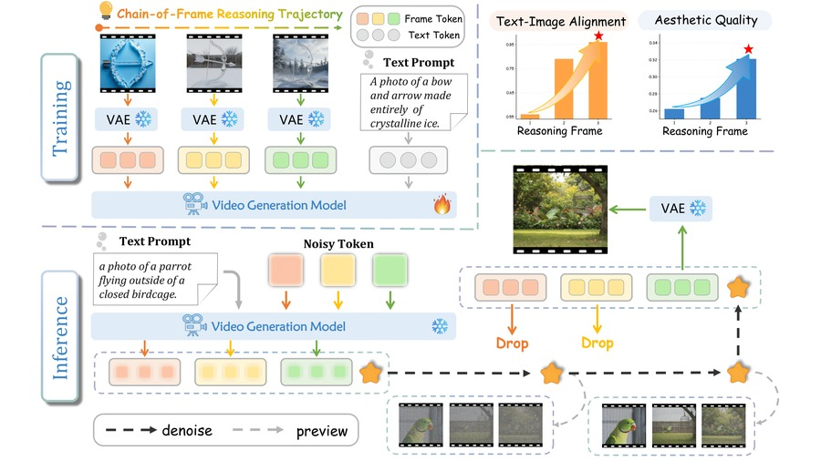
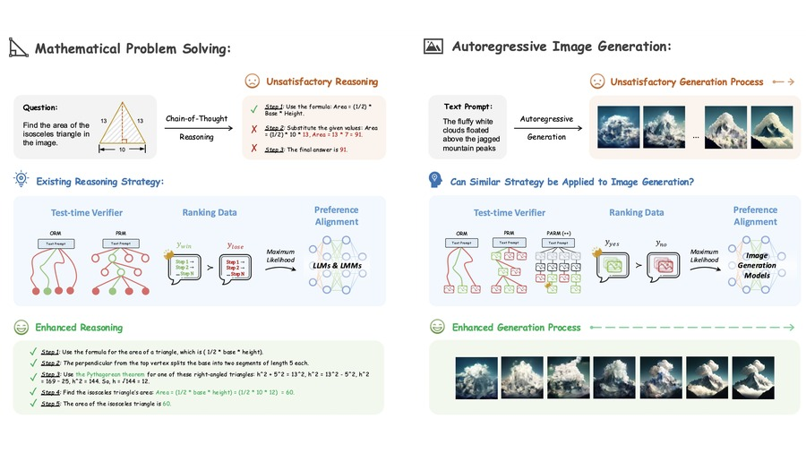
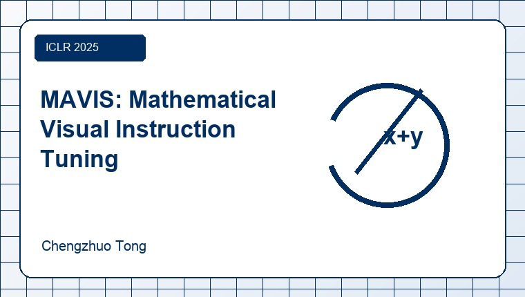

个人简介
我是北京大学一年级硕士生，在前沿交叉学科研究院（AAIS）由张文涛老师和鄂维南院士共同指导，也与张仁瑞密切合作。
自 2025 年 6 月起，我在快手可灵 AI担任研究实习生。我已发表的工作主要是文生图。我现在关注机器人学习，押一个判断：前沿大模型会成为机器人的大脑，它们通过写代码和调用代码来行动。机器人团队必须自己掌握的，是模型给不了的那部分：硬件、仿真和部署。
把物理世界开放给 AGI
物理世界是按人的手和眼睛建的，我想为 agent 重建它的接口。第一步，让机器人和工厂对 agent 可理解、可调用：把硬件做成命令行，也就是"物理世界的 MCP"。第二步，把回路闭上：具身智能体自己做实验，自己修复硬件和产线，并且帮助造出下一代的自己。
教育经历
-
 北京大学（2026.09-2028.09）数学硕士
北京大学（2026.09-2028.09）数学硕士
-
 西安电子科技大学（2022.09-2026.06）人工智能工学学士
西安电子科技大学（2022.09-2026.06）人工智能工学学士
当前判断 · 2026 年 11 月更新
文章我在思考什么
关于 AGI 如何进入物理世界的三个判断。标了日期，因为我预计会改。
前沿大模型会一统具身的大脑
具身智能正处在自己的 GPT-3 时刻。我预计高层推理和技能级控制（System 2 与 System 1）会合并进同一个前沿大模型，不会长期保留一套机器人专用的模型栈。和 computer use 一样，机器人的模型层会变成赢家通吃。
什么会让我改主意：接触密集的操作、触觉、毫秒级控制。如果前沿模型不断变强，专用机器人模型在这些地方仍然长期领先，那"一个模型"能走的距离就比我想的短。
代码是统一的表示
代码紧凑、可组合、可检验，也是前沿大模型最擅长的东西。
对动作：具身还在冷启动期，动作数据很少。写出来并在仿真里验证过的策略，起点是模型已有的知识，不是零。仿真之于机器人代码，相当于测试之于软件：它让奖励可以规模化、可以验证。
对生成：图像、视频、3D 和可交互世界都可以用程序描述。推理一旦搬进代码，生成模型就缩成一个渲染器。留下的问题是：这个渲染器可以有多轻？
硬件是算法的一部分
如果大脑是大家共用的，机器人团队就该去做和它垂直的东西：模型每升级一次，这些东西就更值钱一分。
- 模型愿意调用的本体。从任务和拿得到的监督信号出发，反向设计硬件，再把它做成干净的命令行：机械臂、触觉，乃至工厂。工厂也是一个机器人。
- 对自己的本体和场景最准的仿真。为真正要部署的地方做 real-to-sim。
- 部署的数据飞轮。现场的失败回流成仿真和数据。部署规模就是验证能力。
模型、harness、硬件是一个系统，要放在一起优化。
为什么一定要进物理世界。编程进步快，是因为它的奖励可验证，产出又能反过来造下一代模型。我想把同一个回路带进物理生产。算力要靠实体建出来：晶圆厂、电厂、数据中心。科学的速度取决于实验的速度，而今天的实验速度被人手卡住。文本和代码给模型先验，物理世界给模型一门没有尽头的课程和最终的检验。目标是物理世界的 AutoResearch 闭环。造出能帮忙造更好机器人的机器人。
开放问题
- System 0 和 System 1/2 现在是分开训的，强化学习该怎么把它们一起更新？
- 基于模型的强化学习让运动控制变得高效，它能在操作任务上做到同样的事吗？
- 到底是什么挡住了大规模仿真，又是什么让 sim-to-real 的差距一直合不上？
- 机器人的后训练是否必须在很大的模型上做才有泛化，而部署时又用不起这么大的模型？
- 物理世界的 skill 会不会是多模态的？
最新动态
[09.2026] 开始在北京大学攻读硕士。
[06.2026] Scone 被 CVPR 2026 接收为 Highlight 论文。
[05.2026] CoF-T2I 被 ICML 2026 接收。
[09.2025] Delving into RL for Image Generation with CoT 被 NeurIPS 2025 接收。
[06.2025] Let’s Verify and Reinforce Image Generation Step by Step 发表于 CVPR 2025。
[01.2025] MAVIS 被 ICLR 2025 接收。
论文成果
代表性论文与预印本

CoF-T2I: Video Models as Pure Visual Reasoners for Text-to-Image Generation

Scone: Bridging Composition and Distinction in Subject-Driven Image Generation via Unified Understanding-Generation Modeling
- Yuran Wang*, Bohan Zeng*, Chengzhuo Tong, Wenxuan Liu, Yang Shi, Xiaochen Ma, Hao Liang, Yuanxing Zhang, Wentao Zhang
- IEEE/CVF 计算机视觉与模式识别大会（CVPR 2026，Highlight）。
- [论文]

Delving into RL for Image Generation with CoT: A Study on DPO vs. GRPO
- Chengzhuo Tong, Ziyu Guo, Renrui Zhang, Wenyu Shan, Xinyu Wei, Zhenghao Xing, Hongsheng Li, Pheng-Ann Heng
- 神经信息处理系统大会（NeurIPS），2025。
- [论文]

Let's Verify and Reinforce Image Generation Step by Step
- Renrui Zhang*, Chengzhuo Tong*, Zhizheng Zhao*, Ziyu Guo*, Haoquan Zhang, Manyuan Zhang, Jiaming Liu, Peng Gao, Hongsheng Li
- IEEE/CVF 计算机视觉与模式识别大会（CVPR），2025。
- [论文]

MAVIS: Mathematical Visual Instruction Tuning with an Automatic Data Engine
- Renrui Zhang, Xinyu Wei, Dongzhi Jiang, Ziyu Guo, Shicheng Li, Yichi Zhang, Chengzhuo Tong, Jiaming Liu, Aojun Zhou, Bin Wei, Shanghang Zhang, Peng Gao, Chunyuan Li, Hongsheng Li
- 国际学习表征大会（ICLR），2025。
- [论文]
欢迎交流
我在找三类人：有真机调试经验的人，在北京做四足导航的人，以及不同意上面这些判断并且手里有证据的人。可以通过 X（@selfcarveddecay）、邮箱或微信找我。